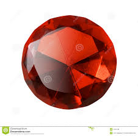
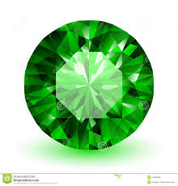
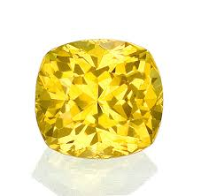
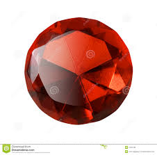
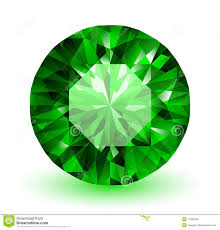
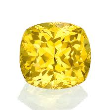
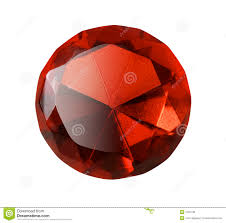
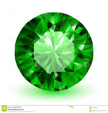
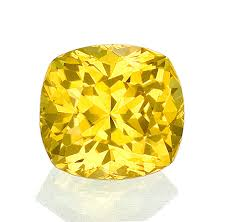

Crystal Game!
Click on each crystal to determine the value
Press any crystal to get started!
Let's play the cyrstal game!
 





Click on each crystal to determine the value
Press any crystal to get started!
Let's play the cyrstal game!


